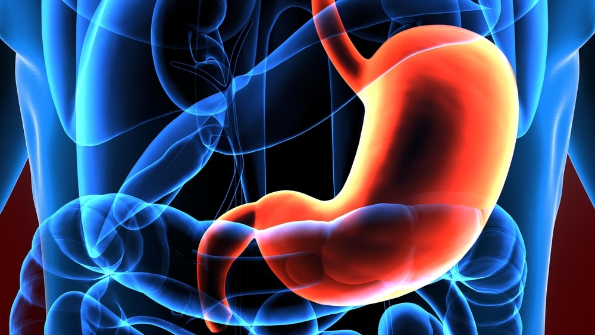

Il décompose les aliments en utilisant des acides et des enzymes pour faciliter la digestion.
Un ulcère de l'estomac, également appelé ulcère gastrique, est une plaie ouverte qui se forme sur la paroi interne de l'estomac.
Cette condition peut être très douloureuse et est souvent causée par une infection bactérienne due à Helicobacter pylori
ou par l'utilisation prolongée de médicaments anti-inflammatoires non stéroïdiens (AINS) comme l'ibuprofène